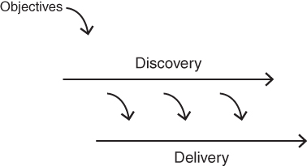

CHAPTER 8
Key Concepts
In this book, I refer to a set of concepts that form the foundation of modern product work. I'd like to briefly explain them here.
Holistic Product
I have already been using the term product pretty loosely. I did say I'm only talking about technology‐powered products. But, more generally, when I refer to product I mean a very holistic definition of product.
This certainly includes the functionality—the features.
But it also includes the technology that enables this functionality.
It also includes the user experience design that presents this functionality.
And it includes how we monetize this functionality.
It includes how we attract and acquire users and customers.
And it can also include offline experiences as well that are essential to delivering the product's value.
If, for example, your product is an e‐commerce site, then this would include the merchandise‐fulfillment experience and the merchandise‐return experience. In general, for e‐commerce businesses, product includes everything except the actual merchandise being sold.
Similarly, for a media company, we refer to the product as everything except the content.
The point is to have a very inclusive and holistic definition of product. You are not just concerned with implementing features.
Continuous Discovery and Delivery
I explained previously that most companies still have a process that is essentially waterfall at its core, and I told you that what we do in a modern team is very different.
We'll be going more into the product development process later, but I do need to introduce a high‐level concept about process at this point in our discussion. That is, there are two essential high‐level activities in all product teams. We need to discover the product to be built, and we need to deliver that product to market.

FIGURE 8.1 Continuous Discovery and Delivery
Discovery and delivery are our two main activities on a cross‐functional product team, and they are both typically ongoing and in parallel.
There are several ways to think about this and to visualize it, but the concept is fairly simple: We are always working in parallel to both discover the necessary product to be built—which is primarily what the product manager and designer work on every day—while the engineers work to deliver production‐quality product.
Now, as you'll soon see, it's a little more involved than that. For example, the engineers are also helping daily on discovery (and many of the best innovations come from that participation, so this is not a minor point), and the product manager and designer are also helping daily on delivery (mainly to clarify intended behavior). But this is what's going on at a high level.
We need to discover the product to be built, and we need to deliver that product to market.
Product Discovery
Discovery is very much about the intense collaboration of product management, user experience design, and engineering. In discovery, we are tackling the various risks before we write even one line of production software.
The purpose of product discovery is to quickly separate the good ideas from the bad. The output of product discovery is a validated product backlog.
Specifically, this means getting answers to four critical questions:
Prototypes
Product discovery involves running a series of very quick experiments, and to do these experiments quickly and inexpensively, we use prototypes rather than products. At this point, let me just say that there are several types of prototypes, each for different risks and situations, but they all require at least an order of magnitude of less time and effort than building a product.
To set your expectations, strong teams normally test many product ideas each week—on the order of 10 to 20 or more per week.
To set your expectations, strong teams normally test many product ideas each week—on the order of 10 to 20 or more per week.
I want to emphasize that these are experiments, typically run using prototypes. A prototype is not something that's ready for prime time and certainly not something your company would try to sell and stand behind. But they're immensely useful, as they're all about learning fast and cheap.
Product Delivery
The purpose of all these prototypes and experiments in discovery is to quickly come up with something that provides some evidence it is worth building and that we can then deliver to our customers.
This means the necessary scale, performance, reliability, fault tolerance, security, privacy, internationalization, and localization have been performed, and the product works as advertised.
The purpose of product delivery is to build and deliver these production‐quality technology products, something you can sell and run a business on.
Products and Product/Market Fit
Just because we've invested the time and effort to create a robust product does not mean anyone will want to buy it. So, in the product world, we strive to achieve product/market fit.
This is the smallest possible actual product that meets the needs of a specific market of customers. Marc Andreessen is credited with popularizing this all‐important concept, and it is a major focus of this book.
And just to be clear, since these are actual products, they are the result of delivery. The discovery activities help us determine the necessary product, but it is delivery that actually does the work necessary to build, test, and release the product.
Product Vision
The final critical concept is product vision. This refers to the longer‐term objective of this product, normally 2–10 years out. It is how we as a product organization intend to deliver on the company's mission.
So, we use prototypes to conduct rapid experiments in product discovery, and then in delivery, we build and release products in hopes of achieving product/market fit, which is a key step on the way to delivering on the company's product vision.
Now don't worry if you're hazy on any of these concepts. I know you likely have many questions, but they'll hopefully become clear as we dive deeper into each topic. It's also normal to be a little skeptical—“How can I possibly run 15 of these experiments in a week?”
I warned you that strong product teams work nothing like most teams, and this should give you your first taste of how different things can be.
Minimum Viable Product
The concept of minimum viable product (MVP) is one of the most important concepts in the product world. It has been around for many years. The term was coined by Frank Robinson (in 2001), and I wrote about the concept in the first edition of this book (in 2008). It was popularized, however, in the book The Lean Startup by Eric Ries in 2011.
Eric's book did a great deal to help product teams, and to me, it is a must‐read book for all product people. But I think most people would likely admit that the concept of MVP has caused considerable confusion within product teams, and I spend a lot of my time helping teams get value out of this critical concept.
The vast majority of times I meet a team that has been working hard to create an MVP I am able to convince them that they could have achieved the same learning in a fraction of the time and effort. They have spent literally months building an MVP when they could have had this same learning in days or, sometimes, even in hours.
The other unhappy consequence is that very often the rest of the company—especially key leadership in sales and marketing—is confused and embarrassed by what the product team is trying to get customers to buy and use.
While this is partly a result of the way most people have learned this concept, I think the root of the issue is that while the P in MVP stands for product, an MVP should never be an actual product (where product is defined as something that your developers can release with confidence, that your customers can run their business on, and that you can sell and support).
The MVP should be a prototype, not a product.
Building an actual product‐quality deliverable to learn, even if that deliverable has minimal functionality, leads to substantial waste of time and money, which of course is the antithesis of Lean.
I find that using the more general term prototype makes this critical point clear to the product team, the company, and the prospective customers.
So, in this book, I talk about different types of prototypes being used in discovery and products being produced in delivery.